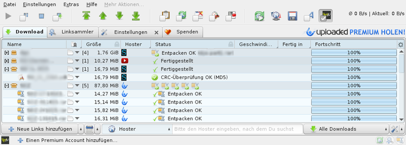
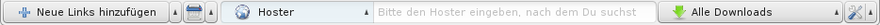
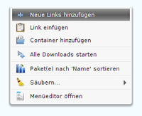
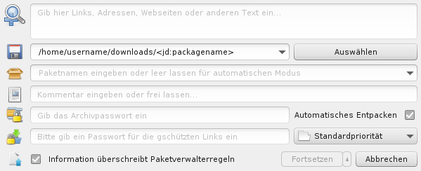

JDownloader 2
Dieser Artikel wurde für die folgenden Ubuntu-Versionen getestet:
Ubuntu 16.04 Xenial Xerus
Ubuntu 14.04 Trusty Tahr
Zum Verständnis dieses Artikels sind folgende Seiten hilfreich:
JDownloader 2  ist ein in Java geschriebenes Downloadprogramm, das insbesondere für den Download von One-Klick-Hostern geeignet ist. Die Open-Source-Software ist die Weiterentwicklung des JDownloaders und liegt in einer gut funktionierenden Betaversion vor.
ist ein in Java geschriebenes Downloadprogramm, das insbesondere für den Download von One-Klick-Hostern geeignet ist. Die Open-Source-Software ist die Weiterentwicklung des JDownloaders und liegt in einer gut funktionierenden Betaversion vor.
Voraussetzungen¶
Das Programm setzt Java 6 oder 7 voraus. Benötigt wird das unfreie Oracle Java oder das unter Ubuntu empfehlenswerte OpenJDK.
Installation¶
Hinweis!
Fremdsoftware kann das System gefährden.
JDownloader 2 Beta ist nicht in den offiziellen Paketquellen enthalten, die Entwickler stellen aber ein Installationsskript für Linux bereit, das die Installation sehr einfach macht:
Falls nicht bereits geschehen, Java installieren
Installationsskript passend zur Systemarchitektur herunterladen [1][2] und ausführen:
für 32-bit-Systeme:
wget http://installer.jdownloader.org/JD2Setup_x86.sh chmod +x JD2Setup_x86.sh ./JD2Setup_x86.sh
für 64-bit-Systeme:
wget http://installer.jdownloader.org/JD2Setup_x64.sh chmod +x JD2Setup_x64.sh ./JD2Setup_x64.sh
Den Anweisungen des Installationsassistenten folgen. Im Verlauf der Installation kann man ein Installationsverzeichnis auswählen und ein Desktopsymbol erstellen lassen.
Im Anschluss an die erfolgreiche Installation kann das Programm mit dem Befehl jdownloader2 oder über das Desktopsymbol gestartet werden [3].
Bedienung¶
Übersicht¶
 Im Hauptfenster von JDownloader 2 findet man oben eine Werkzeug- und die Tableiste und unten eine Such- und die Statusleiste. Die Werkzeugleiste umfasst in der Standardansicht die folgenden Schaltflächen:
Die ersten drei Symbole dienen zur Steuerung der Downloads. Hier lässt sich der Downloadvorgang starten, pausieren/drosseln oder abbrechen.
Mit den folgenden vier Schaltflächen lassen sich sowohl einzelne Downloads als auch Downloadpakete in der Downloadliste nach oben oder unten verschieben. Dies dient zur Beeinflussung der Downloadreihenfolge.
Nach der zweiten Trennlinie finden sich fünf Schaltflächen für häufige Einstellungen: Hier können Zwischenablage-Überwachung, Reconnects, Premium-Accounts, Ruhemodus und die Shutdown-Erweiterung mit nur einem Klick an- und abgeschaltet werden.
Die letzten drei Schaltflächen dienen dem manuellen Auslösen eines Reconnects, zum Programmupdate und dem Schnellzugriff auf My.JDownloader.org.
In der oberen Tableiste findet man standardmäßig die folgenden vier Reiter (Tabs):
„Download“ ist der Tab, in dem die Downloads gesammelt und organisiert werden. Hier lassen sich Downloads verfolgen, Einstellungen etwa zu Downloadpriorität und -geschwindigkeit treffen, fertige Downloads bearbeiten u. v. m.
Im „Linksammler“ werden hinzugefügte Downloads zur Sortierung und Organisation gesammelt. Hier lassen sich zum Beispiel einzelne Downloads in Paketen zusammenfassen, Downloadordner ändern und ungewünschte Links auf vielfache Weise filtern und entfernen.
„Einstellungen“ ist der Tab, in dem alle allgemeinen und auch speziellen Einstellungen für JDownloader 2 getroffen werden. Hier lässt sich etwa der Standard-Downloadordner einstellen und der Reconnect konfigurieren. Auch Erweiterungen können in diesem Tab installiert und verwaltet werden.
Mit einem Linksklick auf „Spenden“ kann man die Entwicklung des völlig kostenlosen und in Bezug auf Werbung sehr zurückhaltenden Programms unterstützen.

Unterhalb findet man die Suchleiste. Hier kann man das Linkanalysefenster öffnen, in der Downloadliste aufräumen, die Downloads nach verschiedenen Kriterien durchsuchen oder filtern und Einstellungen z. B. zur Anzahl gleichzeitiger Downloads oder zur einer möglichen Geschwindigkeitsbegrenzung vornehmen. Über die Statusleiste ganz unten kann man einen Premium-Account hinzufügen und laufende Aktionen von JDownloader 2, etwa einen laufenden Reconnect oder eine Linkanalyse, überwachen.
Links hinzufügen¶
Für das Hinzufügen von Downloadlinks gibt es drei Wege:
Automatisch via Zwischenablage: Mit der Schaltfläche „Zwischenablageüberwachung de-/aktivieren“ in der Werkzeugleiste kann man die Überwachung der Zwischenablage einschalten. Ins Programm aufzunehmende Links muss man so nur noch in die Zwischenablage kopieren und sie werden automatisch im Linksammler hinzugefügt, was das Sammeln von Downloadlinks stark erleichtert. Auch Texte mit mehreren Links werden korrekt verarbeitet.
Achtung!
Bei aktivierter Zwischenablage-Überwachung werden alle Inhalte der Zwischenablage von JDownloader 2 ungeschützt in einer Datei gesammelt, die erst bei Beendigung des Programms wieder gelöscht wird! Dies stellt ein potenzielles Sicherheitsrisiko dar, insbesondere wenn Passwörter und andere sensible Daten kopiert werden. Aus diesem Grund sollte die Überwachung nur bei Bedarf ein- und nach der Benutzung sofort wieder ausgeschaltet werden.

Manuell via „Linkanalyse“: Mit „Rechtsklick
 → Neue Links hinzufügen“ oder einem Klick auf die gleichnamige Schaltfläche in der unteren Leiste öffnet sich das Linkanalyse-Fenster. Dort kann man einzelne oder mehrere Links oder auch beliebigen Text einfügen. Mit einem Linksklick auf „Fortsetzen“ durchsucht JDownloader 2 den eingefügten Text dann nach Links. Hierbei werden Links, die auf eine Website verweisen, direkt geladen und alle Dateien der Website hinzugefügt. Bei Bedarf kann man über den kleinen Pfeil an der Schaltfläche eine „Tiefe Linkanalyse“ starten.
→ Neue Links hinzufügen“ oder einem Klick auf die gleichnamige Schaltfläche in der unteren Leiste öffnet sich das Linkanalyse-Fenster. Dort kann man einzelne oder mehrere Links oder auch beliebigen Text einfügen. Mit einem Linksklick auf „Fortsetzen“ durchsucht JDownloader 2 den eingefügten Text dann nach Links. Hierbei werden Links, die auf eine Website verweisen, direkt geladen und alle Dateien der Website hinzugefügt. Bei Bedarf kann man über den kleinen Pfeil an der Schaltfläche eine „Tiefe Linkanalyse“ starten.

Automatisch via „Click’n’Load“: Eine wachsende Zahl von Webseiten und die meisten One-Klick-Hoster bieten für den Download Click’n’Load an, über den man die Downloadlinks per Klick direkt in JDownloader 2 laden kann.
Auch mit den Linkcontainerformaten .rsdf, .ccf, .dlc u. a. kann das Programm umgehen. Es genügt, den Link zur Containerdatei in die Zwischenablage bzw. Linkanalyse zu kopieren, JDownloader 2 lädt die Datei dann selbstständig und fügt die enthaltenen Links hinzu. Eine bereits heruntergeladene Containerdatei lässt sich via „Datei → Linkcontainer laden“ öffnen.
Links organisieren¶
Nach dem Hinzufügen erscheinen die Links im Linksammler und müssen nun noch organisiert und zur Downloadliste hinzugefügt werden. Mithilfe der Suchleiste unten und den Filtern auf der rechten Seite lassen sich irrtümliche aufgenommene Links aufspüren und mit der Taste
Entf löschen. Über das Kontextmenü kann man die einzelnen Downloads in Paketen zusammenfassen, den Downloadpfad ändern oder einzelne Downloads deaktivieren. Ebenfalls über das Kontextmenü oder über die Schaltfläche „Alle Downloads starten“ lassen sich die Links in die Downloadliste übertragen. Der Download startet bei dieser Auswahl automatisch.
Wichtige Einstellungen¶
Die Einstellungen werden im gleichnamigen Tab vorgenommen:
Der Standard-Downloadordner lässt sich unter „Allgemein“ oben festlegen.
Bei „Reconnect“ sind die Einstellungen für den Reconnect zu treffen, siehe dazu die weiterführenden Links.
Unter „Captchas“ lässt sich das Verhalten des Programms bei Captcha-Abfragen konfigurieren. Hier können auch Einstellungen für die Verwendung von Captcha-Diensten wie cheapcaptcha.com oder 9kw.eu getroffen werden.
Menüs und Werkzeugleisten lassen sich unter „Benutzeroberfläche“ leicht an die eigenen Bedürfnisse anpassen.
Der „Archiventpacker“ ist ein nützliches Werkzeug, das eine Menge Arbeit abnehmen kann. In den Einstellungen unten findet sich die Passwortliste für häufig genutzte Passwörter.
Unter „Infosymbol“ lässt sich das Kontrollleistensymbol umfassend konfigurieren.
Problembehebung¶
Zahlreiche Probleme und ihre Behebung sind bereits im Wikiartikel des Vorgängers JDownloader gut beschrieben.
Automatisches Herunterfahren¶
Wenn das automatische Herunterfahren mithilfe der Erweiterung „JD Shutdown“ nicht funktioniert, muss das Herunterfahren ohne Administratorrechte aktiviert werden. Eine Anleitung dazu findet sich im Artikel JDownloader.

 Programmübersicht
Programmübersicht- Erstellt mit Inyoka
-
 2004 – 2017 ubuntuusers.de • Einige Rechte vorbehalten
2004 – 2017 ubuntuusers.de • Einige Rechte vorbehalten
Lizenz • Kontakt • Datenschutz • Impressum • Serverstatus -
Serverhousing gespendet von